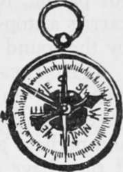

Personal Kits. Part 2
Description
This section is from the book "Camping And Woodcraft", by Horace Kephart. Also available from Amazon: Camping and Woodcraft.
Personal Kits. Part 2
Cutlery should be of the best steel obtainable. Knicks and dull edges are abominations, so use knives and hatchets for nothing but what they were made for, and whet them a little every day that they are in service.
Pocket Knife
The jackknife has one stout blade equal to whittling seasoned hickory, and two small blades, of which one is ground thin for such surgery as you may have to perform (keep it clean). Beware of combination knives; they may be passable corkscrews and can openers, but that is about all.
Compass
This instrument may not often be needed to guide one's course, but it is like the proverbial pistol in Texas. Besides, it is useful in reading a map, and indispensable for route sketching. If you get one of the common kind with both ends simply pointed and the north one blued or blackened scratch B = N (Blue equals North) on the case. This seems like an absurd precaution, does it not? Well, it will not seem so if you get lost. The first time that a man loses his bearings in the wilderness his wits refuse to work. He cannot, to save his life, remember whether the black end of the needle is north or south. Once when I got lost in the big woods I was not frightened, and yet I did a perfectly idiotic thing: to hold my compass level and steady I set it on the thick muzzle of my rifle barrel! That made the needle swing away out of true. It was ten minutes before I thought of this, and tried again, with all iron carefully put aside. That shows what a dunderhead a fellow can be, even when he is fairly cool.
If dust accumulates inside the case of a compass it may interfere a little with its true pointing, and moisture will do so. But, so long as the needle moves freely, do not quarrel with it, no matter how sure you may think you are that it has been bewitched.
A compass with revolving dial (card compass) is somewhat easier to use than one with a needle, be cause the N on the dial always points north, no matter which way you turn; but it must be rather bulky, to traverse freely, is not so sensitive as a needle, and wears the pivot faster.
There are compasses with dials illuminated by a radio-active substance that are handy to use at night. The old-fashioned " luminous " compasses that have to be exposed to sunlight every day are not worth the extra cost, for you will forget to attend to them.
Anyway, a woodsman should carry a pocket electric flasher, and, with that along, a common compass serves very well.
My favorite compass is of a pattern known as the u Explorer's," as here shown (Fig. 105), except that it has a hinged cover. Twice I have crushed the glasses of open faced compasses and ruined the pivots. The moveable arrow is to be set toward one's objective, when the needle points north; it then indicates the general direction of the course. The dial is of 1^4 inches diameter, and is divided into spaces of two degrees, reading from left to right, which is better for an amateur than the contrary reading of a surveyor's compass.
The use of the compass will be explained in Vol. II, under the head of Route Sketching.
I wear the instrument in a small pocket sewed on my shirt for that purpose, so it fits, and attach it to a button-hole by a short, strong cord. A long cord would catch in brush. If the compass is carried in a large pocket it will flop out when you stoop over or fall down. Sometimes, when mapping, I nave worn one in a leather bracelet, like a wrist-watch ; but a better way is to attach it, at such time, to the little board that your cross-section paper is tacked on.
Watch
Ordinarily a cheap watch is good enough for the woods. If you do carry a good one, and it is open-faced, there is a good way to protect it from wet that I read some years ago in a sportsman's journal. This also helps to keep it from falling out of a pocket. " To keep one's watch dry, even though you go overboard, take a piece of pure rubber dental dam 8 inches square, put the watch in the center, and bring the rubber together at the stem, tying the puckered up rubber with a bit of string. When you wish to see the face, simply stretch the rubber over the front and you can see the hands clearly through it".
Fig. 105. Compass with Course Arrow.
If it is desired to make a sketch-map of some region for which you cannot obtain a government topographical sheet, and the country is too rough for pacing, it will help if one member of the party carries a stop-watch, with which to estimate distances by the sound of pistol shots, as described in Vol. II.
Whistle
A party traveling in thick woods with only an old line of blazes to guide them may have to deploy to find the marks. It will save time, and perhaps a good deal of searching for each other, if they have shrill whistles and a prearranged code of signals. The army officer's whistle is a good one.
Maps
Write to The Director, U. S. Geological Survey, Washington, D. C, for an index map showing what topographical sheets have been published for the State that you are to travel in. These sheets are sold at ten cents each (no stamps). Their character is described as follows:
The United States Geological Survey has been engaged since its organization in making a topographic survey and map of the United States. The unit of survey is a quadrangle 15', 30', or 1° in extent each way, covering an area of one-sixteenth, one-fourth, or one " square degree." The unit of publication is an atlas sheet 16 1/2 by 20 inches, and each sheet is a topographic map of one of the above areas. As the atlas sheets are uniform in size, the greater the area covered the smaller the scale of the map. The scale of the full degree sheet is 1: 250,000, that of the 30' sheet is 1: 125,000, and that of the 15' sheet i: 62,500. A sheet is designated by the name of some well-known place or feature appearing on it, and the names of adjoining published sheets are printed on the margins. The maps are engraved on copper and printed from stone. The cultural features, such as roads, railroads, cities, towns, etc., as well as all lettering, are in black; all water features are printed in blue; while the hill features are shown by brown contour lines. The contour interval varies with the scale of the map and the relief of the country.
Continue to: